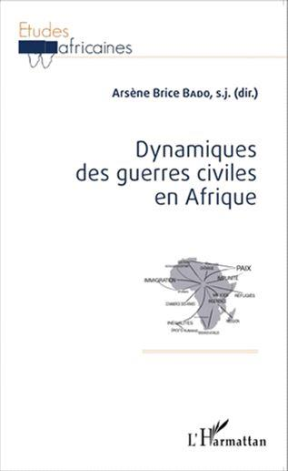
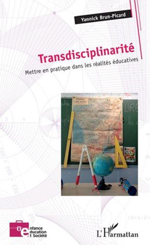
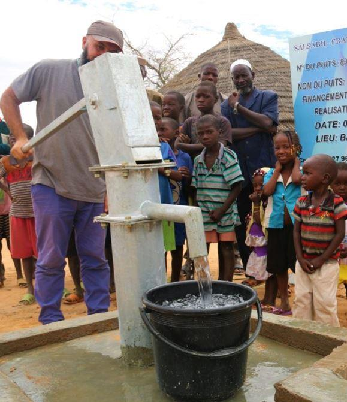
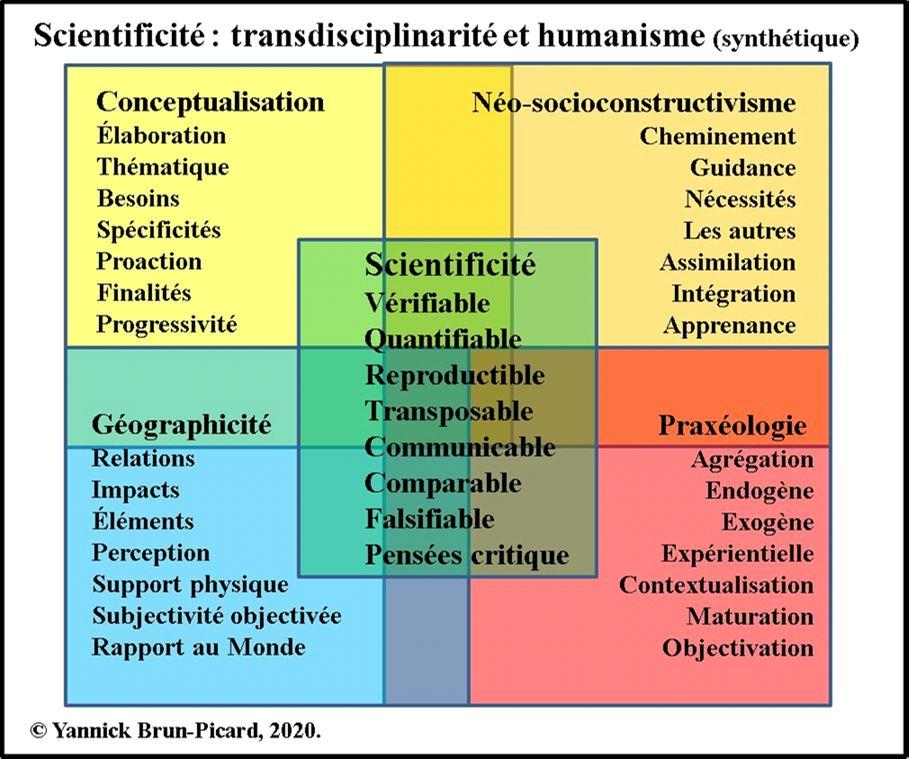
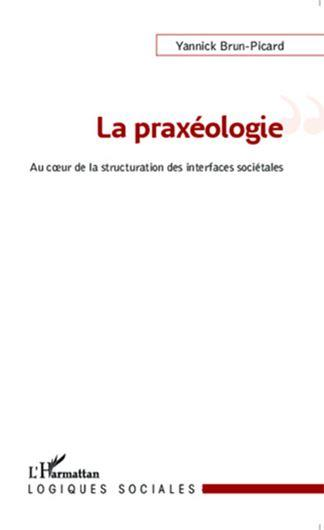
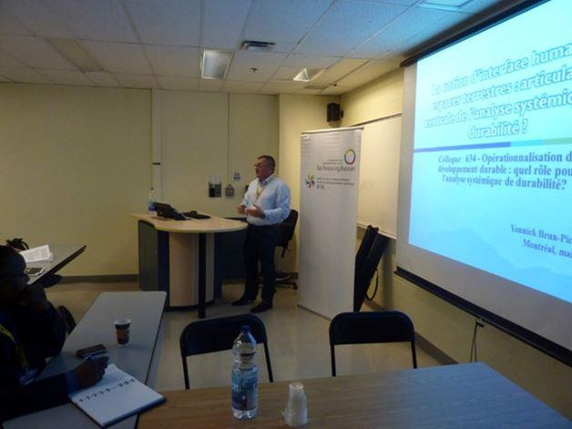
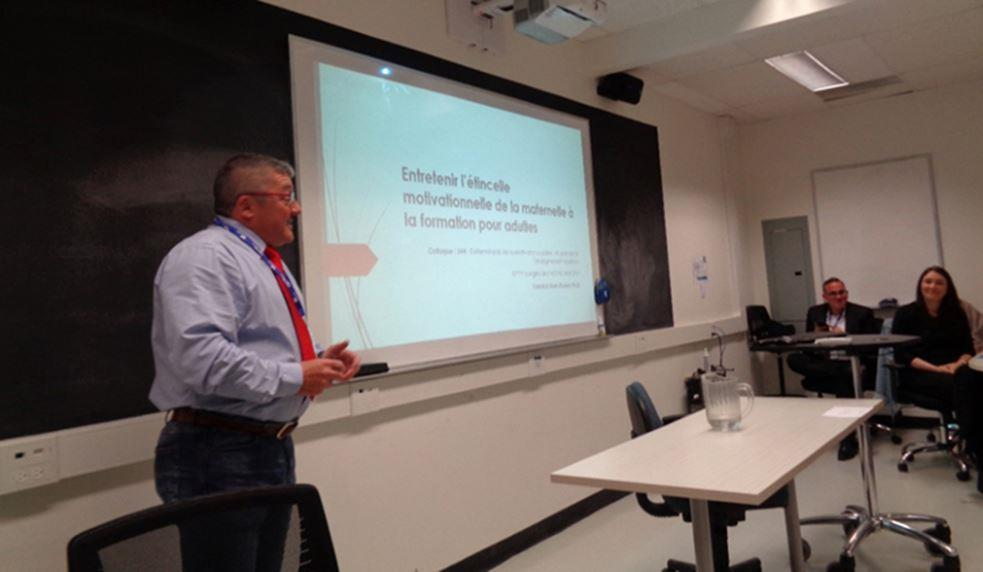
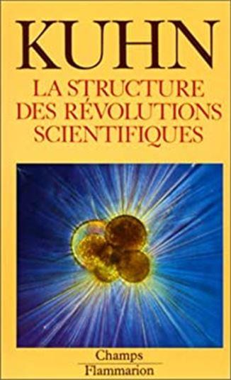

Les évènements sanitaires mondiaux récents liés au COVID-19 ont été exposés, dans le précédent numéro de la revue « Méthode »1, pour leurs premières conséquences, implications, tensions et incompréhensions. Ils sont journellement médiatisés dans leurs phases d’expansion selon les territoires et les conséquences pour les populations, les économies ou les structures sociétales. Les intervenants de tous les domaines scientifiques exposent dans leurs développements, sans les nommer, des pratiques transdisciplinaires et une conscientisation humaniste indispensable pour répondre aux maux auxquels nos sociétés ont à répondre et auxquels elles auront à faire face.
En toute subjectivité objectivée, il est donné, à chaque observateur des phénomènes en action au sein des interfaces sociétales que nous partageons et pour lesquelles nous sommes des constituants, la capacité de pouvoir affirmer qu’aucune action ou décision ne peut être prise pour elle-même sans concevoir ses interdépendances ni ses conséquences sur les domaines connexes. Cela sous-tend que la transdisciplinarité devient une norme silencieuse avec laquelle composent les intervenants et les décideurs. Simultanément, la prise en considération du vivant, de nos sociétés, de l’avenir et de la qualité de vie sur la Terre met en avant l’émergence tout aussi discrète d’une forme d’humanisme.
Aspirer à œuvrer avec méthode pour répondre aux évolutions contemporaines s’effectue, tout en concevant le monde d’après-demain, afin que la diversité du vivant soit préservée et que nos dépendances soient réduites sans pour cela éradiquer les moteurs mercantiles, en mettant en œuvre des démarches transdisciplinaires vectrices d’humanisme. Ce positionnement se trouve marginalisé, pour ne pas dire frappé du sceau de « non scientifique », voire il subit l’inquisition de la norme, laquelle n’est pas prête à admettre l’interpénétration des domaines scientifiques au service de savoirs de nature scientifique et du devenir de l’Humanité.
Comment mettre à la disposition du plus grand nombre la transdisciplinarité et l’humanisme tout en préservant la scientificité des démarches entreprises, quelques soient les domaines d’intervention, mais plus spécifiquement ceux des sciences humaines, sociétales et éducatives ?
Les lectrices et les lecteurs fidèles ou occasionnels de la revue ont déjà pris connaissance des axes particuliers sur lesquels s’appuient les travaux tendus en direction du paradigme de durabilité2. Pour les lignes à venir, il est proposé d’aller un peu plus loin dans les pratiques méthodiques et méthodologiques propices à une meilleure compréhension du monde des faits. Des facettes ont été développées il y a quelques années3 pour les domaines spécifiques des conflits en Afrique. Aujourd’hui, l’association de la transdisciplinarité et de l’humanisme est une forme d’agrégation pragmatique de deux ouvrages4/5 afin que chaque personne s’approprie les potentialités expansives de ces pratiques sans amputer la qualité de ses productions.
Ainsi, pour entrer en résonnance6 avec les inquiétudes immédiates du monde en mouvement, celles plus profondes de la gestion des phénomènes, celles de nature conceptuelle de ce que nous voulons construire et celles qui sont pour l’heure non préhensiles de l’esprit qui orientera cette effervescence, il est posé des jalons indicatifs et incitatifs sur ce qu’est la transdisciplinarité et l’humanisme. Puis, une contextualisation des mises en œuvre plus ou moins visibles prépare la diagonalisation d’exemples et la reconnaissance des freins et des limites à cette orientation méthodique. Enfin, la notion d’outil paradigmatique pour tous finalise cette brève incursion au cœur d’une conception projective des pratiques des études des faits sociétaux à l’œuvre dans nos territoires.
Trans-disciplinarité et humanisme
Présenter la transdisciplinarité et l’humanisme par le menu en quelques lignes serait incongru. Seuls des traits majeurs et sélectifs sont très brièvement exposés afin de percevoir l’étendue de ce qu’il reste à étudier pour ces deux domaines participant à la construction des savoirs et des connaissances. La transdisciplinarité7 est suivie de l’humanisme géographique8 car l’orientation essentielle de ces lignes est de faire en sorte que les personnes intègrent le support terrestre et ce qui constitue l’épiderme dans les constituants indispensables à l’optimisation de nos compréhensions et de nos propositions. En outre, en limitant l’humanisme employé, il est plus simple de s’immerger au cœur des interfaces humanité/espaces terrestres pour discerner l’impact de l’anthropisation sans conscience, si ce n’est celle de briller ou de faire du profit. Cette conception limitative conduit aux deux aspects suivants que l’on trouve dans un ouvrage récent9.
TRANSDISCIPLINARITÉ
Dans un cadre contextuel large, elle est la mise en synergie socioconstructive d’actants de différents domaines scientifiques, dans un esprit de moindre contrainte, d’effervescence cognitive, afin d’œuvrer à la finalisation d’objectifs collectifs et sociétaux partagés par la mise en application d’une collaboration coopérative, de nature praxéologique, produite par une médiance trajective induite par les participants, hors de toute hiérarchie ou d’une soumission à un dogme idéologique et/ou méthodologique. Ainsi, les sciences préservent leur identité, sous l’impulsion de leurs producteurs, tout en construisant une œuvre, collective ou individuelle, responsable adaptée à une réalité que les intervenants aspirent à voir évoluer au service de la progression des savoirs.
Les frontières des spécialités sont dissoutes pour qu’une trajection soit opérée par les individus. Ils exposent des résultats vérifiables, reproductibles, transposables et falsifiables. Ils sont soutenus dans cette dynamique par une émulation socioconstructive alimentée avec une convivance recherchée lors des échanges, des dialogues, des réciprocités transformatives et des validations des différentes étapes de la production finalisée au service de l’ensemble des parties en présence et plus largement de l’Humanité. Lorsqu’elle est mise en œuvre individuellement, par une personne qui étudie un phénomène sociétal spécifique, l’actant construit une trajection entre les domaines connexes constituant les contextes d’étude, d’investigation, d’analyse ou de critique afin d’user de tous les ressorts des savoirs disponibles pour rendre préhensiles les réalités comprises puis explicitées en toute impartialité. Elle est alors une démarche pragmatique vectrice de scientificité pour des œuvres collectives aux ancrages diversifiés tout en étant un cadre méthodologique ouvert pour chaque actant en mesure d’œuvrer au cœur d’une complexité évolutive en acceptant la richesse du monde des faits et ses interdépendances.
HUMANISME GÉOGRAPHIQUE
C’est une conception des pratiques scientifiques, de l’engagement individuel et collectif pour laquelle une bienveillance et une distanciation empathique orientent les interventions des actants afin que le vivant soit préservé dans ses diversités, que la Terre et l’épiderme terrestre demeurent vivables pour les prochaines générations, que nos sociétés œuvrent à la plénitude de chaque individu tout en participant aux progrès de l’évolution, et que les savoirs largement diffusés soient une image intègre des réalités qui ont participé et qui participent au monde que l’Humanité vit et qu’elle laissera en héritage.
Il est une conscientisation des maux causés par l’avidité d’une anthropisation irraisonnée, tout en concevant l’œuvre à accomplir au service du plus grand nombre, en faisant de l’Humanité un élément dépendant de son environnement ainsi que de son seul lieu de vie : la Terre.
Les deux ensembles définitoires proposent à la perception des leviers originaux pouvant être personnalisés afin de répondre au mieux aux réalités auxquelles s’attache un analyste. L’insistance avec laquelle la transdisciplinarité est exposée, bien que trop superficiellement, met en perspective l’étendue des possibles en particulier dès lors que la contextualisation des constructions cognitives s’applique à rendre les faits et les phénomènes tels qu’ils sont et non tels qu’un dogme ou une conviction laisse entendre qu’ils sont.
Contextualisation de mise en application
Les bases sont jetées. La transdisciplinarité est en place accompagnée par un humanisme géographique que l’on veut voir s’appliquer pour les territoires, l’épiderme terrestre, le vivant ainsi que pour les dynamiques sociétales qui s’impriment dans ces lieux de vie. Afin de contextualiser une mise en application de ces axes méthodiques, il est nécessaire de montrer ce qu’est la scientificité indissociable de la pensée critique tout en insistant sur la praxéologie. Cette dernière est très proche des sciences de l’ingénieur pour lesquelles les intervenants acceptent l’erreur et vont jusqu’au point de rupture pour ne jamais reproduire les maux déjà rencontrés.
Vous aurez remarqué que la terminologie mise en œuvre dans cette affirmation de la transdisciplinarité accompagnée de l’humanisme induit des réentrées fonctionnelles des concepts sur eux-mêmes en relation avec les aspects connexes. Cela indique que la scientificité attendue est elle aussi un produit des dynamiques internes produites par l’analyste lors de ses études et de ses explications. Ces imbrications à multiples niveaux se retrouvent de manière synthétique dans la figure suivante où sont associés les éléments principaux à cette démarche. Toutefois, deux aspects sont définis ci-après, car leur utilisation est rare sans être explicitée.

PENSÉE CRITIQUE
Elle est un processus de décorticage d’une réalité afin de mettre en relief ses articulations, ses forces, ses faiblesses, ses orientations pour comprendre ses agencements, percevoir ses finalités et pouvoir proposer des alternatives transposables et réalistes dans l’exercice de l’Enseignement. Elle exige une argumentation et fondée et alimentée en relation étroite avec le contexte de mise en œuvre et l’implication des apprenants. Elle impose de la rigueur, une distanciation empathique, une mise à l’écart des croyances, des certitudes, des convictions et des dogmes pour parvenir à une expression autonome, diffusable, partageable et transposable des résultats. Elle permet aux actants d’exprimer leurs analyses sur des faits, des phénomènes, des savoirs et des activités en explicitant leurs perceptions tout en prenant en compte l’avis des pairs, les différences, les mouvances et les divergences d’approche ou de conception pour enrichir les savoirs disponibles sur le monde des faits.
PRAXÉOLOGIE
La praxéologie est une démarche méthodique, au cœur de l’action, articulée selon des modèles complémentaires et parfois en tension. Elle agrège les aspects pertinents, selon le principe de moindre contrainte dans une orientation de nature transdisciplinaire, des modèles systémiques, socioconstructifs, structurels, cognitivistes, génétiques, pragmatiques et dialogiques de conscientisation récursive et autorégulée sur : l’agir, le perçu, le produit et la destination. L’analyse, structurée et construite, implique l’ensemble des dimensions, des mises en synergie, afin d’atteindre la réalisation d’une production professionnelle en fonction de ses temporalités, ses dynamiques de rupture/continuité de la structuration de l’interface de contact pour l’ensemble des agissants.
Ainsi s’atteignent pour l’actant des ajustements fonctionnels des savoirs évolutifs sur le domaine d’étude et s’acquièrent des capacités innovantes de prévisibilité, d’anticipation et de projection. Sa finalité s’exprime dans la production d’une théorie à même de nous éclairer sur une réalité et par extension sur notre Humanité.
La pensée critique et la praxéologie au sein d’une pratique transdisciplinaire participent à la production de la scientificité indispensable à toute production de savoirs diffusables et assimilables. Cela implique que des interfaces de contact et des interfaces territorialisées10 soient intégrées dans les structurations analytiques soumises aux destinataires. La scientificité conceptualisée par une représentation synthétique permet à chaque lecteur désireux de l’appliquer de sélectionner les éléments pertinents pour son objet d’étude en préservant la qualité de ses travaux.
Exemples diagonalisés
La scientificité brièvement exposée laisse une large liberté au concepteur d’une étude. Afin, de percevoir les fonctionnalités de la scientificité ainsi caractérisée des exemples sont diagonalisés. La pensée critique mise en œuvre dans une démarche praxéologique conduite par l’exercice d’une transdisciplinarité de nature humaniste a été mise en application dans des recherches où il était nécessaire d’aller plus profondément que l’évidence factuelle qui trop souvent donne satisfaction, car elle ne permet pas de mettre en exergue les causes ni les responsabilités.

Congrès de l’ACFAS, Montréal, mai 2016
Lors de communications et de conférences données essentiellement lors du congrès annuel de l’ACFAS (Association francophone pour le savoir) qui se déroule au mois de mai au Québec ces axes méthodologiques ont été exposés, défendus, débattus et reconnus par nos pairs. Que ce soit pour l’intégration de l’analyse systémique de durabilité (ASD) ou pour dynamiser l’élan motivationnel en
éducation des plus jeunes au plus âgés ces démarches ont été démontrées comme étant pertinentes pour répondre contextuellement à des difficultés ponctuelles ou à la mise en place de solutions pérennes.
Quatre exemples imagent l’application de la transdisciplinarité et de l’humanisme en particulier géographique. Le premier s’attache aux restanques en Provence. Le second prend en considération la motivation des apprenants. Le troisième l’évolution de la graphie des jeunes élèves. La quatrième prête un intérêt soutenu à l’intégration de la notion d’interface humanité/espaces terrestres pour la gestion des risques lors des phénomènes dus aux évolutions climatiques.
Ces quatre domaines imposent l’existence d’un territoire spécifique où la thématique d’étude prend forme et donne sa texture à des réalités. Pour les restanques ce sera un bassin versant où des exploitants agricoles ont développé des techniques de stabilisation du sol, de son irrigation et de sa productibilité en construisant des murs en pierres sèches. La motivation des apprenants est prise en compte dans la salle de classe au même titre que le cas de la graphie tout en conservant une porte ouverte sur l’externalisation des activités au service des actions d’enseignement effectuées à destination des apprenants. La gestion des risques induits par les phénomènes climatiques englobe des territoires étendus, des échelles de réponses, d’interventions et d’implications pouvant inclure la totalité d’une rivière ou d’un fleuve.
Les acteurs en présence sont les intervenants qu’ils soient des éduquants, des aménageurs, des agriculteurs ou des habitants qui aspirent à mieux vivre le monde qui est le leur. Les techniques mises en œuvre relèvent essentiellement des méthodes collaboratives et des pratiques pédagogiques appartenant à la pédagogie socioconstructive pour laquelle la réciprocité transformative dessine en pointillés l’effort transdisciplinaire.

Congrès ACFAS, Université du Québec en Outaouais, mai 2019
Pour les quatre domaines des dynamiques relationnelles animent des constructions, les relations, les échanges, les implantations en présence qui façonnent les territoires physiques et immatériels que partagent les participants. À ces dynamiques se soudent les contextes propres et les thématiques pour lesquelles des solutions doivent être proposées pour une plus grande efficience des actions entreprises.
Il est alors possible de structurer une étude transdisciplinaire où les acteurs, les supports, les dynamiques et les réalités spécifiques sont pris en considération pour que chaque partie en présence ne soit pas lésée sous le prétexte qu’elle est trop faible pour s’exprimer. Cette intégrité méthodique annonce des limites et des freins à cette pratique humaniste.
Des freins et des limites
Toute méthode a ses limites et la transdisciplinarité même humaniste ne déroge pas à cette réalité. Toutefois, à l’inverse des autres démarches méthodologiques enfermées dans leur domaine d’exercice, la transdisciplinarité est alimentée par toutes les influences disponibles sans pour cela qu’elle devienne un mouvement brownien incontrôlé.
Cet afflux est une limite concrète. Il laisse entendre aux utilisateurs que tout est possible pour arriver à ses fins. Ce n’est pas le cas. La transdisciplinarité associée à l’humanisme est un auto-contrôle de l’action d’investigation, par la mise en action de réentrées pragmatique de l’actant sur lui-même, afin de préserver l’intégrité des travaux ainsi que leur impartialité. En effet, toute étude de nature transdisciplinaire expose la trame méthodologique appliquée au domaine d’étude. Là, se pose très souvent le problème de la reproductibilité des faits sociétaux, des phénomènes ou des modes opérationnels. Il est impossible de reproduire à l’identique une situation d’interaction entre des individus. Seules des similitudes serviront à l’émergence de particularités propices à la conservation d’enseignements adaptatifs.
La crainte de l’individualisme méthodologique est toute proche. La densité de connaissances, la dimension des objets de recherche et d’étude, la complexité des interactions, des imbrications et des interdépendances au cœur des réalités sociétales, ou encore les inductions insoupçonnées des domaines proximaux font que l’individualisme n’est pas miscible dans les pratiques aux destinations scientifiques. Il est admissible qu’une personne produise une démarche originale et trajective, mais celle-ci doit pouvoir être reproduite de manière similaire par ses pairs, ce que ne permet pas l’individualisme méthodologique qui pose des limites physiques à la transdisciplinarité lorsque celle-ci est employée par ce biais.
Les freins à l’intégration de la transdisciplinarité dans les pratiques scientifiques sont nombreux. Le premier qui suffirait à lui seul est la préservation de l’emprise d’un domaine scientifique sur une parcelle de la production des savoirs. Aucune personne ne tolère que son territoire d’expression intellectuelle puisse être rongé par des producteurs qui ne sont pas des purs spécialistes. Viennent ensuite les partages d’informations horizontales qui devraient être trajectives afin de servir toutes les personnes en présence. Les partages demeurent trop souvent disciplinaires, voire interdisciplinaires, c’est-à-dire que les intervenants conservent les limites, les frontières entre les spécialités et n’agissent qu’en fonction des règles de leur domaine en ignorant le plus souvent ce qui est fait de l’autre côté du couloir. Il est vrai que des groupements de chercheurs existent, que des laboratoires regroupent une large diversité de profil, que des bureaux d’études associent des spécialistes de différents domaines, mais tout ceci n’est que ponctuel et enfermé dans une réalisation où les normes du domaine dominant délimitent le cadre d’intervention et d’analyse.
L’inertie institutionnelle freine de toute son énergie contre l’instauration d’une démarche pour laquelle l’hégémonie d’un domaine ne serait plus la norme, où les pairs ne pourraient plus « évaluer » en fonction de l’appartenance.
Quelque part, cette inertie fait appel au « syndrome Einsteinien » qui fera l’objet probablement de quelques pages ultérieurement. Ce syndrome rappelle le statut d’Einstein avant que le soutien de Planck ne permette la large diffusion de ses travaux. Les mandarins ne peuvent pas admettre que des productions transdisciplinaires viennent bousculer leur contrôle sur les publications dites scientifiques, car leur légitimité s’en trouverait amoindrie.
C’est là que l’argument de la méthode vient discréditer toute démarche transdisciplinaire et humaniste puisque celle-ci ne respecte pas les canons d’un domaine et qu’elle intègre une part de subjectivité intolérable pour les tenants d’un quantitativisme restrictif dépendant des seuls chiffres, oubliant que la mesure est effectuée par une personne en fonction d’un contexte et d’une destination.
Les limites et les freins à la pratique transdisciplinaire humaniste sont bien plus denses que les traits superficiels présentés. Ceux-ci indiquent l’immensité du travail à accomplir pour faire maturer les esprits tout en conservant dans un coin de la tête que : « L’obscurantisme se répand lorsque les consciences ne tolèrent que ce qui les conforte. » Une telle limite cognitive et ontologique annonce que cette option possède les qualités pour devenir un outil paradigmatique à la portée de chacun.
Un outil paradigmatique pour tous
Les freins et les limites à l’intégration de la transdisciplinarité et de l’humanisme dans les pratiques scientifiques à même d’étudier les réalités sociétales en cours de réalisation sont parfois gommés pour des activités collectives pour lesquelles les capacités des actants sont cumulatives et s’interpénètrent afin de parvenir à un optimum.
Le néo-socioconstructivisme prend alors toute la place qui peut être la sienne. Il participe à la scientificité attendue dans toute production de savoir. Il contribue à une diffusion impartiale des connaissances. Il apporte une diversité ouverte sur les autres et les cheminements possibles tout en suscitant une guidance dans les réalisations effectuées. Il favorise l’intégration des antagonismes afin de mieux comprendre les faits et leurs conséquences pour l’élaboration de réponses efficaces. Il est indissociable de l’apprenance11 qui devrait pouvoir être intégrée dans les pratiques d’enseignement et non simplement distillée.
La conceptualisation de l’œuvre à entreprendre dans un contexte de production scientifique est considérée comme un outil tout en étant une étape de la scientificité. Cela signifie que la conceptualisation permet la délimitation et la définition vérifiable de l’objet d’étude tout en donnant le cadre conceptuel de l’analyse développée. Le pragmatisme de James12 n’est pas très loin. Dans le cas présent, l’intervenant agit objectivement13 sur la construction de son argumentation tout en reconnaissant la part incompressible de subjectivité présente dans toute perception des réalités due au prisme et à la perspective de lecture des faits. La proaction interne à la conceptualisation catalyse les finalités avec la progressivité indispensable aux particularités abordées.
La transdisciplinarité associée à l’humanisme essentiellement géographique pour le cas présent est un outil paradigmatique, car elle invite tout actant à modifier ses pratiques pour accepter un décentrement propice à une appropriations des réalités moins déformées que par les outils institutionnels. L’influence de Kuhn14 est très présente. Cependant, pour la transdisciplinarité, il reste un cheminement semé d’habitudes, de certitudes, d’inerties et de facilités pour laquelle l’accès au statut de paradigme novateur est encore long.
Un outil paradigmatique doit permettre de s’extraire des normalités qui ne donnent pas accès aux réalités avec intégrité et équité. Il doit favoriser la responsabilisation des intervenants sociétaux et des producteurs de savoirs pour inciter et inviter les concitoyens à œuvrer pour après-demain et non pour demain matin.
Il imbrique de manière trajective les constituants d’un phénomène pour rendre explicite le monde de faits et pour participer à la construction de solutions pérennes aux maux auxquels nos sociétés doivent et devront répondre. En outre, un tel outil ouvre les frontières des disciplines pour créer des passerelles fonctionnelles et démontrer la somme des interdépendances entre les actants initiateurs de nos interfaces évolutives.
L’acceptation et la mise en œuvre d’un outil paradigmatique qui met sur un pied d’égalité tous les domaines scientifiques ainsi que tous les participants à la construction de savoirs collectifs frôle l’utopie. Toutefois, il est envisageable que les réalités partagées par nos sociétés et les obligations de conscientiser l’impact de nos démissions conduisent les acteurs institutionnels à l’intégration de la transdisciplinarité liée à l’humanisme, au minimum géographique, pour améliorer l’efficience de nos actions au sein des multiples territoires où nous évoluons et auxquels nous appartenons.
Conclusion
La transdisciplinarité alimentée par l’humanisme soutenu par la praxéologie et la pensée critique, lesquelles font appel à la subjectivité objectivée de tout individu propose des perspectives de lectures du monde des faits expurgées des croyances, des convictions, des dogmes et de l’hégémonie d’une méthode. Cette orientation expose et rend explicite les outils, les moyens, les biais, les contextes d’appropriation des phénomènes et des évènements présentés par l’analyste. Ce dernier dépasse l’exposition, la compilation et le commentaire de texte trop présents et pourtant source exclusive de légitimité. En se donnant la peine de comprendre la méthode transdisciplinaire pour que l’objet d’étude ne soit pas tronqué, les observateurs se dotent d’un outil performant où l’humanisme trouve toutes ses dimensions.
Il est vrai que dans les contextes scientifiques actuels où le quantitativisme est déifié, ou les méthodes institutionnelles sont les seules reconnues, où l’intolérance à la différence et à la diversité fait que toute émergence est tancée, où les décideurs n’acceptent qu’une réalité en adéquation avec leurs convictions et leurs croyances, une telle démarche transdisciplinaire et humaniste ne peut faire que bondir les critiques.
Néanmoins, la prise en compte en toute scientificité des contextes, des acteurs, des dynamiques et des supports permet s’immerger au cœur des phénomènes et de rendre préhensiles les réalités en toute intégrité et impartialité. Décrire les faits en détails est une démarche pour ainsi dire journalistique, laquelle trouve sa place en tant qu’axe d’approche des actants. Ainsi, une méthodologie reproductible est exploitable pour l’étude, la compréhension, l’explication et la diffusion de savoirs au service de l’humanité.
Il demeure énormément de chemin à parcourir pour que la transdisciplinarité et l’humanisme soient mis en œuvre avec les leviers internes présentés. Toutefois, l’emprise des faits sur nos sociétés, l’impact croissant des phénomènes naturels dans nos territoires, les obligations de réponses viables et non plus seulement économiques et spéculatives ou encore la nécessaire prise en considération de la multitude à laquelle nous appartenons sont autant d’appels à faire en sorte que la transdisciplinarité et l’humanisme soient intégrés dans les pratiques méthodologiques, tout en se préservant d’en faire un dogme source d’errance, d’où l’impérative conscientisation critique qui accompagne cette démarche.
3. Brun-Picard Yannick, 2015, Vers une théorisation de l’interface de conflictualité, in, Dynamiques des guerres civiles en Afrique, Bado Arsène Brice, L’Harmattan, pp.39-66.
4. Brun-Picard Yannick, 2019, Transdisciplinarité, Mettre en pratique dans les réalités éducatives, L’Harmattan : https://www.editions-harmattan.fr/index.asp?navig=catalogue&obj=livre&no=64808
5. Brun-Picard Yannick, 2020, Voyage en géographie, Enseigner et éduquer à une pratique humaniste, L’Harmattan : https://www.editions-harmattan.fr/index.asp?navig=catalogue&obj=livre&no=65563
6. Littré, Dictionnaire de la langue française, 7 volumes. P. 5550
7. Nicolescu Basarab, 1996, La transdisciplinarité, Monaco, Éditions du Rocher.
8. Bailly Antoine, Scariati Renato, 1990, L’Humanisme en Géographie, Anthropos.
9. Brun-Picard, 2020, p.33 et p.144
10. Ferrier Jean-Paul, 2010, Géographie des interfaces, Versailles, Quae.
11. Brun-Picard, 2020, pp.110-116.
12. James William, 2011, Le pragmatisme, Flammarion Champs classiques.
13. Popper Karl, 2009, La connaissance objective, Flammarion Champs classiques.
14. Kuhn Thomas, 1972, La structure des révolutions scientifiques, Flammarion.
Partager cette page